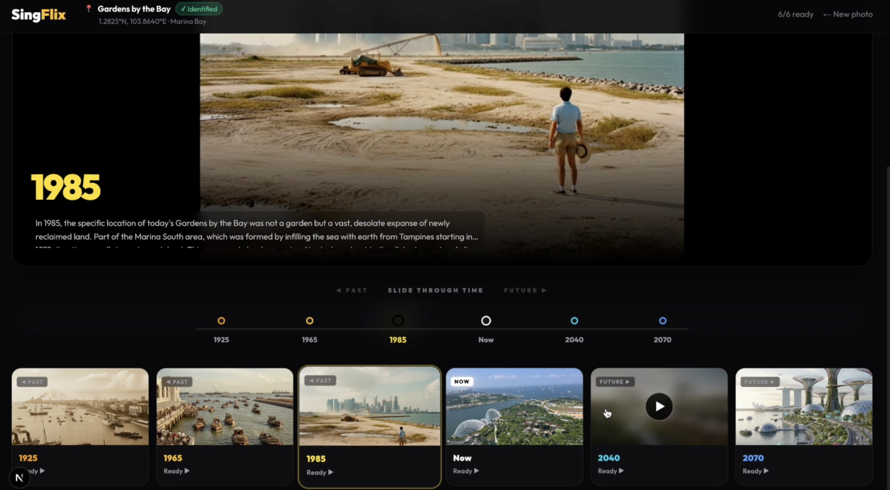
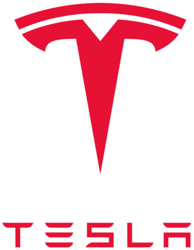
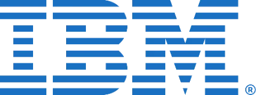
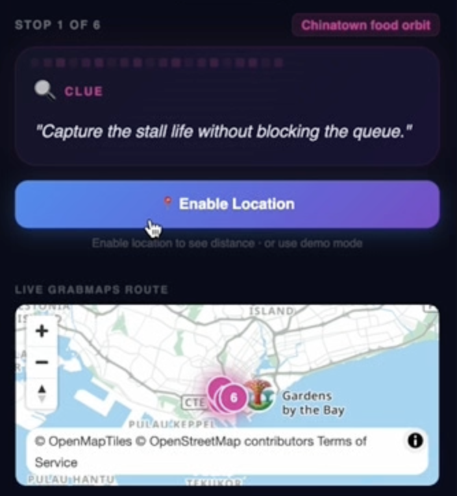
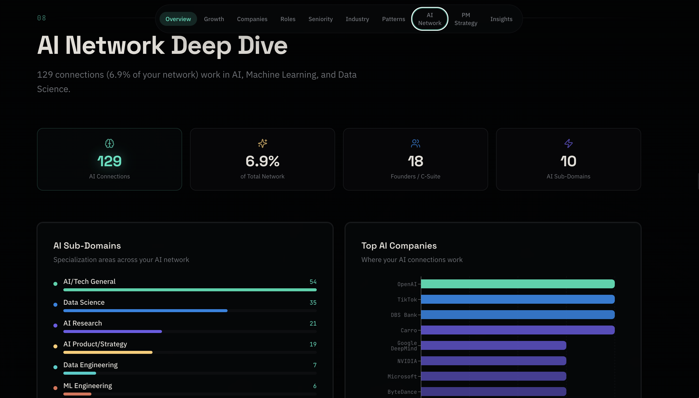

AI Video

Product Leader · Singapore
Hi, I'm Esther. I have spent the last decade building multi-sided marketplaces, AI-powered systems and data products that sit close to real operations and business outcomes at CARRO (SoftBank Vision Fund) and IBM.
EMPLOYERS & PARTNERS


Selected Product Work
A collection of public AI builds and hackathon prototypes that show how I turn ambiguous problems into working products, leveraging product thinking, LLM, APIs, and iterative mindset.




Who Am I?
I'm Esther Wang, a product leader based in Singapore, with 10 years of experience building products across consulting and high-growth tech. My AI journey started with classical ML and production data before GenAI became mainstream, then evolved into productizing AI workflows, and now into building GenAI demos / sample apps.
Contact
If you're hiring for AI/product leadership, exploring a product advisory project, or looking for Southeast Asia marketplace expertise, I'd love to chat.